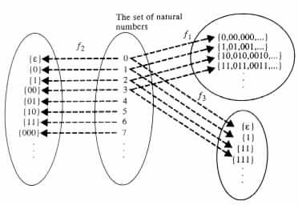

Alphabets and Strings
Ordering of Strings
Representations
The ability to represent information is crucial to communicating and processing information. Human societies created spoken languages to communicate on a basic level, and developed writing to reach a more sophisticated level.
The English language, for instance, in its spoken form relies on some finite set of basic sounds as a set of primitives. The words are defined in term of finite sequences of such sounds. Sentences are derived from finite sequences of words. Conversations are achieved from finite sequences of sentences, and so forth.
Written English uses some finite set of symbols as a set of primitives. The words are defined by finite sequences of symbols. Sentences are derived from finite sequences of words. Paragraphs are obtained from finite sequences of sentences, and so forth.
Similar approaches have been developed also for representing elements of other sets. For instance, the natural number can be represented by finite sequences of decimal digits.
Computations, like natural languages, are expected to deal with information in its most general form. Consequently, computations function as manipulators of integers, graphs, programs, and many other kinds of entities. However, in reality computations only manipulate strings of symbols that represent the objects. The previous discussion necessitates the following definitions.
A finite, nonempty ordered set will be called an alphabet if its elements are symbols , or characters (i.e., elements with "primitive" graphical representations). A finite sequence of symbols from a given alphabet will be called a string over the alphabet. A string that consists of a sequence a1, a2, ¼ , an of symbols will be denoted by the juxtaposition a1a2 · · · an. Strings that have zero symbols, called empty strings, will be denoted by e.
Example 1.1.1 S1 = {a, ¼, z} and S2 = {0, ¼, 9} are alphabets. abb is a string over S1, and 123 is a string over S2. ba12 is not a string over S1, because it contains symbols that are not in S1. Similarly, 314¼ is not a string over S2, because it is not a finite sequence. On the other hand, e is a string over any alphabet.
The empty set Ø is not an alphabet because it contains no element. The set of natural
numbers is not an alphabet, because it is not finite. The union S1 È S2 is an alphabet only
if an ordering is placed on its symbols.
An alphabet of cardinality 2 is called a binary alphabet, and strings over a binary alphabet are called binary strings. Similarly, an alphabet of cardinality 1 is called a unary alphabet, and strings over a unary alphabet are called unary strings.
The length of a string a is denoted |a| and assumed to equal the number of symbols in the string.
Example 1.1.2 {0, 1} is a binary alphabet, and {1} is a unary alphabet. 11 is a binary string over the alphabet {0, 1}, and a unary string over the alphabet {1}.
11 is a string of length 2, |e| = 0, and |01| + |1| = 3.
The string consisting of a sequence a followed by a sequence b is denoted ab. The string ab is called the concatenation of a and b. The notation ai is used for the string obtained by concatenating i copies of the string a.
Example 1.1.3 The concatenation of the string 01 with the string 100 gives the string 01100. The concatenation ea of e with any string a, and the concatenation ae of any string a with e give the string a. In particular, ee = e.
If a = 01, then a0 = e, a1 = 01, a2 = 0101, and a3 = 010101.
A string a is said to be a substring of a string b if b = gar for some g and r. A
substring a of a string b is said to be a prefix of b if b = ar for some r. The prefix is said
to be a proper prefix of b if r e. A substring a of a string b is said to be a
suffix of b if b = ga for some g. The suffix is said to be a proper suffix of b if
g
e. A substring a of a string b is said to be a
suffix of b if b = ga for some g. The suffix is said to be a proper suffix of b if
g e.
e.
Example 1.1.4
e, 0, 1, 01, 11, and 011 are the substrings of 011. e, 0, and 01 are the proper prefixes of
011. e, 1, and 11 are the proper suffixes of 011. 011 is a prefix and a suffix of 011.
If a = a1 · · · an for some symbols a1, ¼ , an then an · · · a1 is called the reverse of a, denoted arev. b is said to be a permutation of a if b can be obtained from a by reordering the symbols in a.
Example 1.1.5
Let a be the string 001. arev = 100. The strings 001, 010, and 100 are the permutations of
a.
The set of all the strings over an alphabet S will be denoted by S* . S+ will denote the set S* - {e}.
Searching is probably the most commonly applied operation on information. Due to the importance of this operation, approaches for searching information and for organizing information to facilitate searching, receive special attention. Sequential search, binary search, insertion sort, quick sort, and merge sort are some examples of such approaches. These approaches rely in most cases on the existence of a relationship that defines an ordering of the entities in question.
A frequently used relationship for strings is the one that compares them alphabetically, as reflected by the ordering of names in telephone books. The relationship and ordering can be defined in the following manner.
Consider any alphabet S. A string a is said to be alphabetically smaller in S* than a string b, or equivalently, b is said to be alphabetically bigger in S* than a if a and b are in S* and either of the following two cases holds.
Example 1.1.6 Let S be the binary alphabet {0, 1}. The string 01 is alphabetically smaller in S* than the string 01100, because 01 is a proper prefix of 01100. On the other hand, 01100 is alphabetically smaller than 0111, because both strings agree in their first three symbols and the fourth symbol in 01100 is smaller than the fourth symbol in 0111.
The set {e, 0, 00, 000, 001, 01, 010, 011, 1, 10, 100, 101, 11, 110, 111}, of those
strings that have length not greater than 3, is given in alphabetical ordering.
Alphabetical ordering is satisfactory for finite sets, because each string in such an ordered set can eventually be reached. For similar reasons, alphabetical ordering is also satisfactory for infinite sets of unary strings. However, in some other cases alphabetical ordering is not satisfactory because it can result in some strings being preceded by an unbounded number of strings. For instance, such is the case for the string 1 in the alphabetically ordered set {0, 1}*, that is, 1 is preceded by the strings 0, 00, 000, ¼ This deficiency motivates the following definition of canonical ordering for strings. In canonical ordering each string is preceded by a finite number of strings.
A string a is said to be canonically smaller or lexicographically smaller in S* than a string b, or equivalently, b is said to be canonically bigger or lexicographically bigger in S* than a if either of the following two cases holds.
An ordered subset of S* is said to be canonically ordered or lexicographically ordered, if b is not canonically smaller in S* than a whenever a precedes b in the subset.Example 1.1.7 Consider the alphabet S = {0, 1}. The string 11 is canonically smaller in S* than the string 000, because 11 is a shorter string than 000. On the other hand, 00 is canonically smaller than 11, because the strings are of equal length and 00 is alphabetically smaller than 11.
The set S* = {e, 0, 1, 00, 01, 10, 11, 000, 001, ¼} is given in its canonical ordering.
Given the preceding definitions of alphabets and strings, representations of information
can be viewed as the mapping of objects into strings in accordance with some rules. That
is, formally speaking, a representation or encoding over an alphabet S of a set D is
a function f from D to  that satisfies the following condition: f(e1) and
f(e2) are disjoint nonempty sets for each pair of distinct elements e1 and e2 in
D.
that satisfies the following condition: f(e1) and
f(e2) are disjoint nonempty sets for each pair of distinct elements e1 and e2 in
D.
If S is a unary alphabet, then the representation is said to be a unary representation. If S is a binary alphabet, then the representation is said to be a binary representation.
In what follows each element in f(e) will be referred to as a representation, or encoding, of e.
Example 1.1.8 f1 is a binary representation over {0, 1} of the natural numbers if f1(0) = {0, 00, 000, 0000, ¼ }, f1(1) = {1, 01, 001, 0001, ¼ }, f1(2) = {10, 010, 0010, 00010, ¼ }, f1(3) = {11, 011, 0011, 00011, ¼ }, and f1(4) = {100, 0100, 00100, 000100, ¼ }, etc.
Similarly, f2 is a binary representation over {0, 1} of the natural numbers if it assigns to the ith natural number the set consisting of the ith canonically smallest binary string. In such a case, f2(0) = {e}, f2(1) = {0}, f2(2) = {1}, f2(3) = {00}, f2(4) = {01}, f2(5) = {10}, f2(6) = {11}, f2(7) = {000}, f2(8) = {1000}, f2(9) = {1001}, ¼
On the other hand, f3 is a unary representation over {1} of the natural numbers if it assigns to the ith natural number the set consisting of the ith alphabetically (= canonically) smallest unary string. In such a case, f3(0) = {e}, f3(1) = {1}, f3(2) = {11}, f3(3) = {111}, f3(4) = {1111}, ¼ , f3(i) = {1i}, ¼
The three representations f1, f2, and f3 are illustrated in Figure 1.1.1.
|

|
In the rest of the book, unless otherwise is stated, the function f1 of Example 1.1.8 is assumed to be the binary representation of the natural numbers.